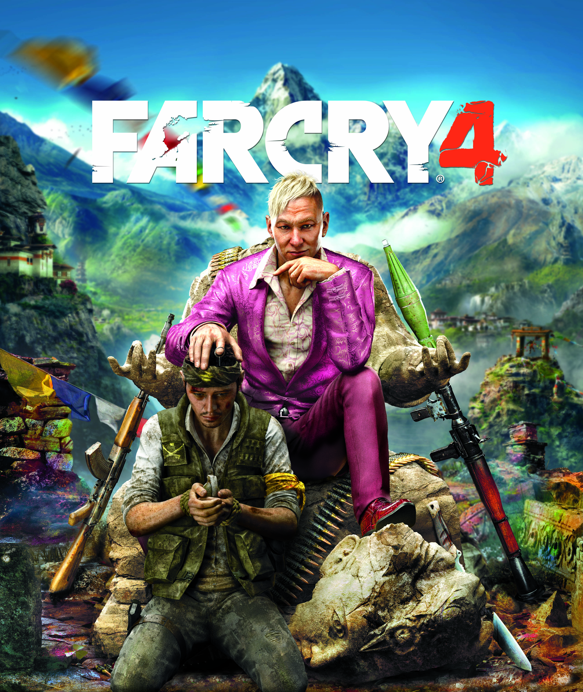

"Far Cry 4" this time will be spent in the region of Kyrat, "a beautiful, dangerous and wild 'Himalayan region, where the protagonist Ajay will have to deal with the tyranny of Pagan Min, a man who declared himself king.
Described by French publisher as "a further step towards the revolution of the shooter genre," the title will be "built based on the success of 'Far Cry 3'." Its production was divided between studios Montreal, Red Storm, Toronto, Shanghai and Kiev.
10/31/2014 | jogos.uol.com.br